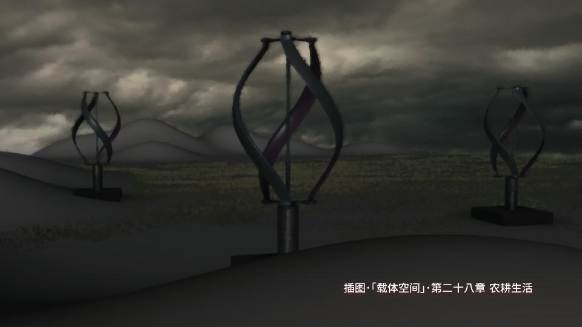
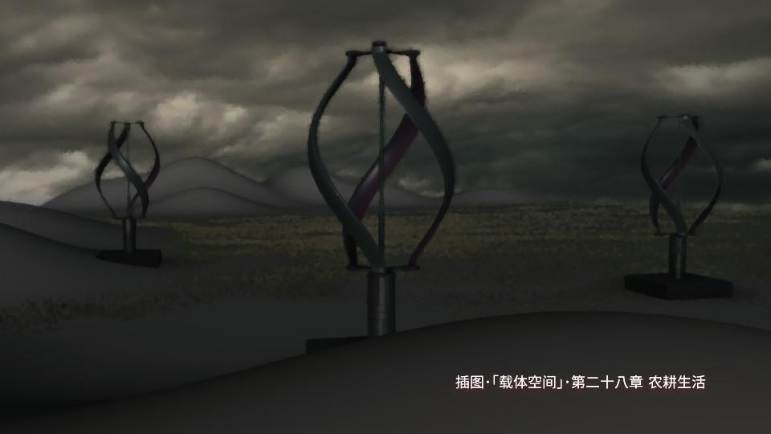

科幻小说: ｢载体空间｣
Welcome to N31WeLt
｢载体空间｣ 楔子 :
两百四十年前,一个炎热的夜晚,
詹姆斯·瓦特辗转难眠,
灵感如同债主一般纠缠着这位苏格兰巧匠,
他亢奋地从床上爬起来,忍不住又挑灯来到树林后的工作间,
借着月光,端详着那台尚未完工的机器,
大约从这一晚开始,人类文明如同打了鸡血一样猛蹿｡
二零一六,
科技迅猛发展了两个世纪,当初的鸡血已耗尽,
颓惫悄然来袭,今日技术之辉煌触及理论上限,
九十年,基础科学,踏步不前｡
无奈伴随着我们进入二十一世纪,
看呐,这就是儿时梦想的地方:
航天飞机在这个年代被除役,
芯片公司日渐沦为牙膏厂,
核聚变发电始终还差五十年,
就连好莱电影都玩了命地拍续集…
如同以往,商业驾驭着日益憔悴的科技依旧所向披靡,
两百年间,这对搭档早已密不可分,
合体变成一头不知饥饱的巨兽,扫荡世界,
后蒸气时代的人们遍尝其带来的甜头｡
如今,已没有人愿意也没有人知道,如何放缓这头奔命巨兽的步伐｡
我们一起闭上眼睛,享受着､忍受着生活,等待着那一天到来｡
小说主要人物 :
吴佑問 : 素茹会创始人,Ks理论发现者
西蒙 : 吴佑問科研搭档,素茹会主要捐资人
秦翀 : M大学学生,素茹会成员,乙宸计划骨干
Richard : M大学教授,吴佑問副手
黎晓瑗 : 前JPL工程师,秦翀课题搭档
埃瑞克 : 核专家,素茹会早期成员
梁晴枫 : M大学学生,素茹会成员,乙宸计划骨干
黑客刘 : 素茹会早期成员,网络高手
Ken : 行星地质学家,首批登陆N31的探索组领队
汉娜 : 医生,任务专家,首批登陆N31的探索组成员
马丁 : 农学家,首批登陆N31的探索组成员
睿銝 : 普里特联合舰队指挥官
洛伦 : N31殖民地治安官
伊琳 : N31殖民地荣归派女首领
杨耀五 : N31殖民地单程志愿者,荣归派二号人物
小靴子 : 秦翀的宠物,九命量子猫
 
